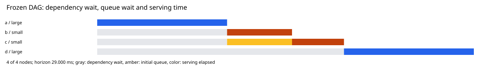

冻结 DAG 与模型池预测
同一冻结请求图上的因果调度预测。时间单位为 ms。
轨迹来源：synthetic_teaching_trace
Hand-derived fork/join oracle: a10,b15,c19,d29 milliseconds; no hardware claim.
Trace SHA256：e2b0b975cf0df640a1bb8bf71bf8286cbf083918420cd6eec6af8e3407d16661
| 整体状态 | 任务 makespan | 观测 / 排空 elapsed | 节点全部完成 | 资源已排空 |
|---|---|---|---|---|
| COMPLETED | 29.000 | 29.000 | True | True |
任务 makespan 是全部节点最后输出 token 的最晚时刻；elapsed 包含必要资源排空。未全部完成的任务 makespan 为 —。依赖等待、初次排队与计算后的服务耗时分别记录。
节点 CSV · 设备 CSV · 甘特图 SVG · 离线重放计划

因果时间线

灰色：依赖等待；琥珀色：初次排队；模型颜色：首次计算至请求完成的服务历时。图最多显示 500 个节点，完整节点数据保留在 JSON / CSV 中。
逐卡资源摘要
| 设备 | 模型池 | 副本 | PP stage | TP rank | busy ms | 利用率 | 峰值 KV GiB |
|---|---|---|---|---|---|---|---|
| large-gpu | large | 0 | 0 | 0 | 20.000 | 68.97% | 0.000 |
| small-gpu | small | 0 | 0 | 0 | 9.000 | 31.03% | 0.000 |
利用率是模型组或 PP stage 的 busy 时间除以整个观测 elapsed，不是实测 GPU occupancy。
逐节点摘要
| 节点 | 模型池 | 状态 | ready | 依赖等待 | 初次排队 | 完成 |
|---|---|---|---|---|---|---|
| a | large | COMPLETED | 0.000 | 0.000 | 0.000 | 10.000 |
| b | small | COMPLETED | 10.000 | 10.000 | 0.000 | 15.000 |
| c | small | COMPLETED | 10.000 | 10.000 | 5.000 | 19.000 |
| d | large | COMPLETED | 19.000 | 19.000 | 0.000 | 29.000 |
观测依赖链
a → c → d
该链包含资源排队与 release 间隙，不是隔离执行成本的理论下界。
模型边界
- model pools own exclusive devices and independent links, host pools and DMA lanes
- dispatch, DAG dependency evaluation and inter-model data transfer have zero modeled latency
- request content and target model are frozen; generated semantic quality is not evaluated
- quantized byte widths are declared analytical assumptions, not quantization kernel validation
- per-device utilization is modeled busy time, not measured GPU occupancy